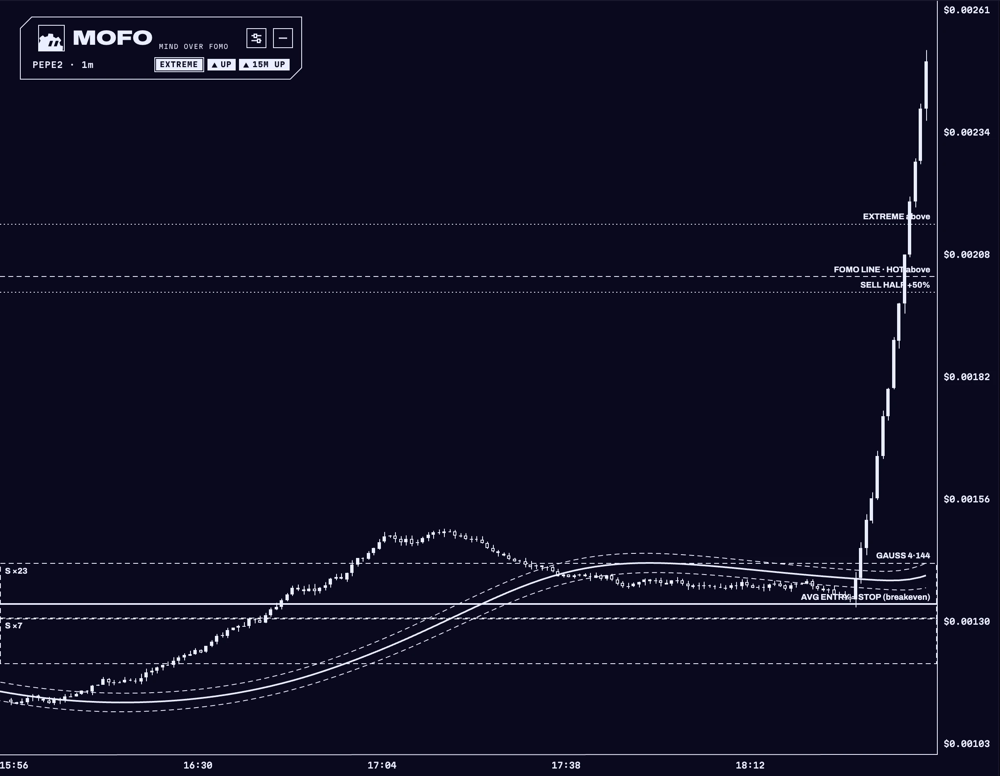
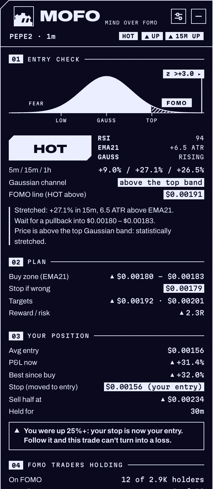
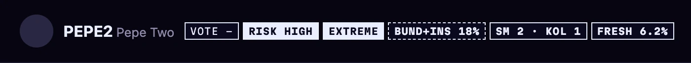
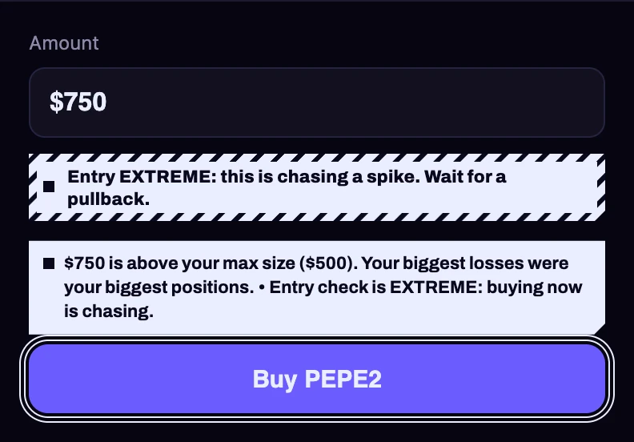

mofo is a copilot for fomo.family. it reads the chart and the holders before you do, and checks every buy against the rules you set for yourself.
chrome extension
free
can't place trades
02/05O
OVER
it draws over the chart you already trade on. a gaussian channel, the line where chasing starts, a buy zone with a stop and two targets, support and resistance with how many times each one held.
gaussian 4 · 144 · ×1.414
fomo line
buy zone + stop
03/05F
FEAR
(of missing out)
+312% in 15 minutes and the buy button is right there. mofo reads the same candles and gives the entry a heat. at hot it says wait for the pullback, and draws where the pullback is.
calmwarmhotextreme
stop to entry
+25%
sell half
+50%
emergency stop
-60%
max buy
$500
stop to entry, sell half and the emergency stop, replayed on 34 real closed trades, added $2,541.
04/05O
mofo pulls the top 40 holders and profiles the 8 biggest wallets: 30 day win rate, what they made, how long they hold. bundlers, snipers, insiders and wallets funded by the same wallet get flagged.
the extension is free, and it can't place trades or touch your wallet.
06/06
THE TOOL
mofo is a free chrome extension for fomo.family. it draws on the chart you already use and checks every buy against your rules before you click. it can't place trades or touch your wallet.
everything is drawn on fomo's own tradingview chart. the drawings are locked, so you can't drag one by accident, and they never get saved into your chart layout.
fomo.family · pepe2 · 1mmofo overlay

preview build: the real extension code on a sample chart
gaussian channel
4 poles, 144 bars, bands at ×1.414 of the filtered range. the trend with the noise taken out. a close over the top band is statistically stretched.
fomo line
the price where the entry turns hot, EMA21 plus 2.5 ATR. the dotted line over it is extreme, plus 4 ATR. above those lines you're chasing.
the plan
a buy zone with its reward to risk, the stop where the idea is wrong, two targets from the next resistance. under 1.5R it tells you to skip.
levels
support and resistance zones built from swing points, labelled with how many times price touched them.
signals
breakout, breakdown, exhaustion and capitulation arrows, only on a clean close with real volume. smart money and kol entries at their average cost.
your position
your average entry, the stop moved to entry once you're up 25%, sell half at +50%, a trailing stop after +100%.
navy candles
optional. repaints fomo's candles and background in the same two colors, and puts fomo's own back when you switch it off.
02the panel
mofo panelhot · holding

everything else, in one panel
it sits on the chart, drags anywhere, collapses to one line and refreshes every 4 seconds.
entry check
calm, warm, hot or extreme, a bell curve showing where price sits in its channel, RSI and distance from EMA21.
your position
p&l, best price since the buy, which stop is live and when to sell half.
who holds it
the top 40 holders, with the 8 biggest profiled: 30 day win rate, realized p&l, hold time. bundlers, snipers, insiders and wallets with a shared funder get flagged.
token risk
liquidity, top 10 share, launch age, one-sided or bot-like flow, missing socials. every warning says where its rule comes from.
narrative
one click searches x for the contract, the name and the ticker, and writes what the token is and where it came from.
ask mofo
a chat that sees the chart analysis, the holders, your position and your rules.
trade journal
every closed trade graded against your rules, with what the rules would have made.
03on fomo itself
you don't have to open anything
badges sit next to the token name: risk, entry heat, bundlers and insiders, smart money, fresh wallets. above fomo's buy button you get a warning when you're chasing, over your max size, averaging down or past your daily loss limit.
token headerbadges

buy boxwarning

04why use it
heat before the clickthe entry check runs on every chart you open, so you see hot or extreme before the buy, not after.
exits set in advancestop to entry, sell half and the emergency stop are on the chart from the start, decided while you're calm.
holders checked firstbundles, insiders and shared funders show up as badges before you're in.
one screenall of it sits on fomo.family. no second tab, no second app.
can't touch your walletno signing, no trading, no wallet permissions. it reads your own page in your own browser.
tested on real tradesstop to entry, sell half and the emergency stop, replayed on 34 real closed trades, added $2,541.
05install
1download the extension and unzip it somewhere it can stay.
2open chrome://extensions, turn on developer mode, click load unpacked and pick the folder.
3open any token on fomo.family. mofo shows up on the chart.